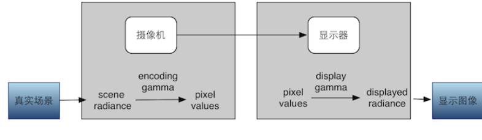
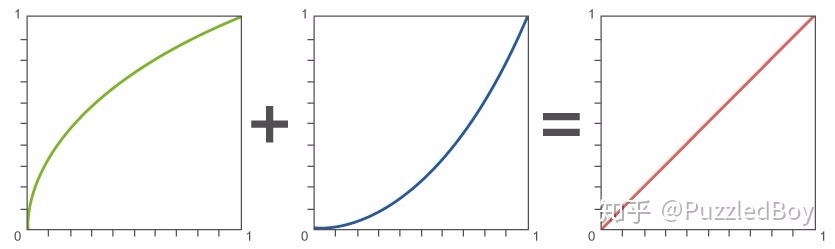
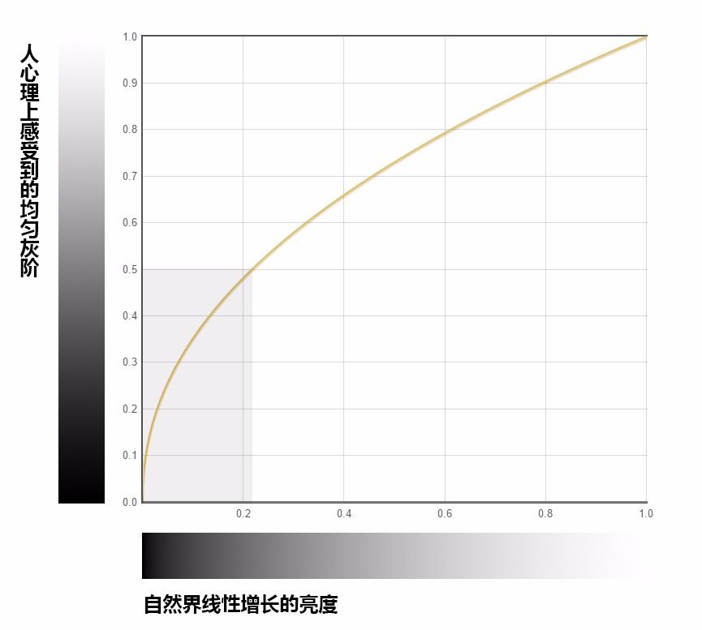
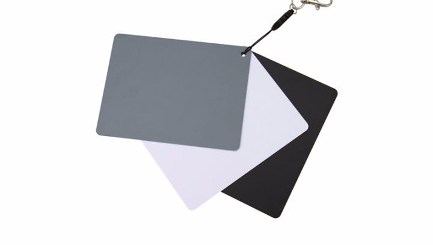
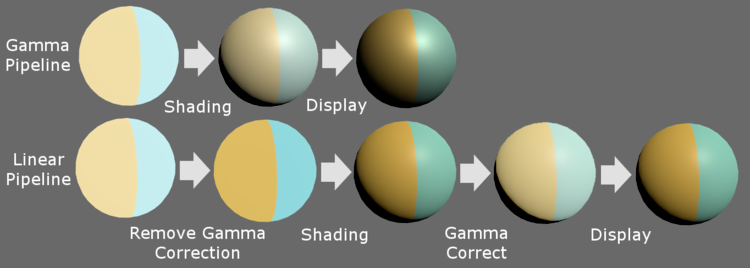
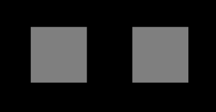
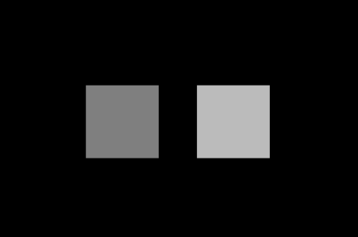

<!DOCTYPE html>


<html lang="en">
  

    <head>
      <meta charset="utf-8" />
        
      <meta
        name="viewport"
        content="width=device-width, initial-scale=1, maximum-scale=1"
      />
      <title>【渲染】理解伽马校正(Gamma Correction)与Unity的Gamma or Linear workflow |  半个出家人</title>
  <meta name="generator" content="hexo-theme-ayer">
      
      <link rel="shortcut icon" href="/img/circle_image.png" />
       
<link rel="stylesheet" href="/dist/main.css">

      
<link rel="stylesheet" href="/css/fonts/remixicon.css">

      
<link rel="stylesheet" href="/css/custom.css">
 
      <script src="https://cdn.staticfile.org/pace/1.2.4/pace.min.js"></script>
       
 

      <link
        rel="stylesheet"
        href="https://cdn.jsdelivr.net/npm/@sweetalert2/theme-bulma@5.0.1/bulma.min.css"
      />
      <script src="https://cdn.jsdelivr.net/npm/sweetalert2@11.0.19/dist/sweetalert2.min.js"></script>

      <!-- mermaid -->
      
      <style>
        .swal2-styled.swal2-confirm {
          font-size: 1.6rem;
        }
      </style>
    <link rel="alternate" href="/atom.xml" title="半个出家人" type="application/atom+xml">
</head>
  </html>
</html>


<body>
  <div id="app">
    
      
    <main class="content on">
      <section class="outer">
  <article
  id="post-CG-gamma-correction-in-unity"
  class="article article-type-post"
  itemscope
  itemprop="blogPost"
  data-scroll-reveal
>
  <div class="article-inner">
    
    <header class="article-header">
       
<h1 class="article-title sea-center" style="border-left:0" itemprop="name">
  【渲染】理解伽马校正(Gamma Correction)与Unity的Gamma or Linear workflow
</h1>
 

      
    </header>
     
    <div class="article-meta">
      <a href="/2020/09/14/CG-gamma-correction-in-unity/" class="article-date">
  <time datetime="2020-09-13T16:11:00.000Z" itemprop="datePublished">2020-09-14</time>
</a> 
  <div class="article-category">
    <a class="article-category-link" href="/categories/CG-Rendering/">CG&Rendering</a>
  </div>
  
<div class="word_count">
    <span class="post-time">
        <span class="post-meta-item-icon">
            <i class="ri-quill-pen-line"></i>
            <span class="post-meta-item-text"> Word count:</span>
            <span class="post-count">4k</span>
        </span>
    </span>

    <span class="post-time">
        &nbsp; | &nbsp;
        <span class="post-meta-item-icon">
            <i class="ri-book-open-line"></i>
            <span class="post-meta-item-text"> Reading time≈</span>
            <span class="post-count">15 min</span>
        </span>
    </span>
</div>
 
    </div>
      
    <div class="tocbot"></div>


  
    <div class="article-entry" itemprop="articleBody">
       
  <p>By Prin@UWA</p>
<p>笔者搜集阅读了一些与Gamma校正(Gamma Correction)、sRGB颜色空间等概念相关的资料，在学习相关知识时，由于理解的错误踩了很多坑。本文结合自己的理解，对相关理论以及在Unity中的处理方式进行了整理，希望能帮助刚接触这个知识的同学有一个粗浅的理解。</p>
<h1 id="伽马校正（Gamma-Correction）"><a href="#伽马校正（Gamma-Correction）" class="headerlink" title="伽马校正（Gamma Correction）"></a>伽马校正（Gamma Correction）</h1><h2 id="存在的原因"><a href="#存在的原因" class="headerlink" title="存在的原因"></a>存在的原因</h2><p>对于Gamma校正存在的原因，在网络上略有争议。汇总各种资料，主要存在以下两种观点：</p>
<ol>
<li>历史原因：去的CRT显示器屏幕上显示的颜色对于传递而来的原始值并不是线性的</li>
<li>人眼对自然亮度感知是非线性的</li>
</ol>
<p>笔者认为，以上两种因素是同时存在且不冲突的，都是Gamma校正产生的原因。以下来自<a href="https://www.kinematicsoup.com/news/2016/6/15/gamma-and-linear-space-what-they-are-how-they-differ" target="_blank" rel="noopener">kinematicsoup官网</a>的说法笔者比较认同：</p>
<blockquote>
<p>The need for gamma arises for two main reasons: The first is that screens have a non-linear response to intensity. The other is that the human eye can tell the difference between darker shades better than lighter shades. This means that when images are compressed to save space, we want to have greater accuracy for dark intensities at the expense of lighter intensities. Both of these problems are resolved using gamma correction, which is to say the intensity of every pixel in an image is put through a power function. Specifically, gamma is the name given to the power applied to the image.</p>
</blockquote>
<p><a href="https://en.wikipedia.org/wiki/Gamma_correction" target="_blank" rel="noopener">Wikipedia-Gamma correction</a>中谈到：</p>
<blockquote>
<p>Although gamma encoding was developed originally to compensate for the input–output characteristic of cathode ray tube (CRT) displays, that is not its main purpose or advantage in modern systems.</p>
</blockquote>
<p>由此基本可以明确：CRT显示器的历史原因是Gamma Correction的起源，与人眼感知能力等相关的其他因素是Gamma Correction一直延续下来的原因之一。 因此，不能绝对地主张其中一种原因而排斥其他说法。以下是笔者搜集和理解到的对两种原因的解释。</p>
<h3 id="CRT显示器特性的原因"><a href="#CRT显示器特性的原因" class="headerlink" title="CRT显示器特性的原因"></a>CRT显示器特性的原因</h3><p>此处主要借鉴冯乐乐女神的文章。<br>在早期，CRT几乎是唯一的显示设备。但CRT有个特性，它的输入电压和显示出来的亮度关系不是线性的，而是一个类似幂律（power-law）曲线的关系。也就是说，使用一个电压轰击CRT Monitor屏幕上的一种图层，这个图层就可以发亮，我们就可以看到图像了。但是，人们发现，咦，如果把电压调高两倍，屏幕亮度并没有提高两倍啊！<br>典型的CRT显示器的伽马曲线大致是一个伽马值为2.5的幂律曲线。显示器的这类伽马也称为<strong>display gamma</strong>。</p>
<p>这个幂律曲线的公式可以简单表述为下式：</p>
<p>$ \gamma(u) = Au^{\gamma } (u\in \left [  0, 1\right ],\gamma(u) \in \left [  0, 1\right ] )$      <strong>where u is R, G, or B</strong></p>
<p>一般情况下取A=1，那么，输入一个颜色值(0.5, 0.5, 0.5)，由该公式得到的输出为(0.177, 0.177, 0.177)。也就是说，显示器的Gamma转换会使输入的像素颜色的亮度变低（Darker）。</p>
<p>由于这个问题的存在，那么图像捕捉设备就需要进行一个<strong>伽马校正(Gamma Correction)</strong>，对显示器的伽玛变换进行<strong>反向补偿</strong>(变亮)。校正使用的伽马叫做<strong>encoding gamma</strong>。<br>所以，一个完整的图像系统需要2个伽马值：</p>
<ul>
<li>encoding gamma：它描述了encoding transfer function，即图像设备捕捉到的场景亮度值（scene radiance values）和编码的像素值（encoded pixel values）之间的关系。</li>
<li>display gamma：它描述了display transfer function，即编码的像素值和显示的亮度（displayed radiance）之间的关系。</li>
</ul>
<p>显示系统的处理流程如下图所示：<br></p>
<p><a href="https://zhuanlan.zhihu.com/p/66558476" target="_blank" rel="noopener">PZZZB</a>的图较好地诠释了对应不同Gamma值的幂律曲线之间的关系：<br></p>
<p>encoding gamma和display gamma的乘积就是真个图像系统的end-to-end gamma。如果这个乘积是1，那么显示出来的亮度就是和捕捉到的真实场景的亮度是成比例的。如果我们没有用一个encoding gamma对shader的输出进行校正，而是直接显示在屏幕上，那么由于display gamma的存在就会使画面失真。<br>虽然现在CRT设备很少见了，但为了保证这种感知一致性（这是它一直沿用至今的很重要的一点），同时也为了对已有图像的兼容性（之前很多图像使用了encoding gamma对图像进行了编码），所以仍在使用这种伽马编码。</p>
<p>至此可以大致理解对于显示器的Gamma校正的原理。然而，实际问题往往更复杂一些，此处做一个简要提示，感兴趣的同学可以深究。<br>encoding gamma和display gamma的乘积为1的话，可以让显示器精确重现原始场景的视觉条件。但是，原始场景的观察条件和显示的版本之间存在两个差异我们需要乘积不是1的end-to-end gamma，来保证显示的亮度结果在感知上和原始场景是一致的。根据《Real-time Rendering》一书中，推荐的值在电影院这种漆黑的环境中为1.5，在明亮的室内这个值为1.125。</p>
<blockquote>
<p>个人电脑使用的一个标准叫sRGB，它使用的encoding gamma大约是0.45（也就是1/2.2）。这个值就是为了配合display gamma为2.5的设备工作的。这样，end-to-end gamma就是0.45 * 2.5 = 1.125了。</p>
</blockquote>
<h3 id="人眼感知能力的原因"><a href="#人眼感知能力的原因" class="headerlink" title="人眼感知能力的原因"></a>人眼感知能力的原因</h3><p>人眼对亮度的感知是非线性的。换句话说，<strong>亮度上的线性变化在人眼看来是非均匀的</strong>。从0亮度变到0.01亮度，人眼是可以察觉到的，但从0.99变到1.0，人眼可能就根本差别不出来，觉得它们是一个颜色。人眼对暗部的变化更加敏感，而对亮部变化其实不是很敏感。<br>通过知乎上韩世麟答主分享的<a href="https://www.zhihu.com/question/27467127#answer-10413243" target="_blank" rel="noopener">视频</a>可以对这个问题有一个直观的理解。</p>
<p></p>
<p>以下两比较通俗的句话可以帮助读者对这个问题进行理解：</p>
<ul>
<li>人心目中（美术中的）看起来中灰的色块，其物理亮度值大约在白色块的20%左右。</li>
<li>自然界的0.2，在心目中的地位是0.5。</li>
</ul>
<p>现实生活中的例子如下图所示：<br></p>
<p>而如果将纯白色块与纯黑色块进行1比1混合，得到的结果在人眼看来是浅灰色。</p>
<p>符合人的直觉的灰度(或者理解为亮度)均匀变化的情况如下图：<br><br>们看到这张图，会自然而然的认为中间的地方即灰度为0.5的地方。事实上，在线性颜色空间下，也就是实际人看到的中间部分的灰度值约为0.218。</p>
<p>那么，美术中使用的中间<strong>灰色</strong>应该设置像素值为多少呢？计算机中图片上的值与最终人们看到颜色是如何对应的呢？ 这也是曾一度困扰笔者的一个问题。<br>在Photoshop中作图，利用颜色取样工具，会发现上图的中间灰色对应的像素颜色值就是(127, 127, 127)，换算成0到1区间的表示方式即约为(0.5, 0.5, 0.5)。由此可见，美术要绘制出直觉上介于黑白中间的灰色，把灰度值设置为0.5就可以了。<br>上文中已经阐述过，显示器会对输入的颜色值进行display gamma转换。也就是说，输入给显示器的灰度值0.5，经过显示器的转换之后，会变为0.218，而这个0.218的灰度，又刚好符合人眼对于中等灰度（0.5）的直觉。这是一个有趣的巧合。这也可能是显示器的Gamma转换一直延续的原因。</p>
<h2 id="Gamma的定义"><a href="#Gamma的定义" class="headerlink" title="Gamma的定义"></a>Gamma的定义</h2><p><a href="https://en.wikipedia.org/wiki/Gamma_correction" target="_blank" rel="noopener">wikipedia - Gamma correction</a>对Gamma校正的相关概念进行了清楚的定义。<br><strong>Gamma correction</strong>, or often simply <strong>gamma</strong>, is a nonlinear operation used to encode and decode luminance or tristimulus values in video or still image systems.<br>Gamma correction is, in the simplest cases, defined by the following power-law expression:<br>${\displaystyle V<em>{\text{out}}=A{V</em>{\text{in}}^{\gamma }}}$</p>
<p>不同的文献资料对颜色空间相关转换的称呼不统一，这也是这块知识不容易理解清楚的原因之一。为此，笔者对同一过程的不同表述方式进行了整理，以便读者进行理解。</p>
<p>$\gamma &lt;1$时(即一些资料所说的1/2.2)，该值称为<strong>encoding gamma</strong>，该幂律函数进行的非线性转换称为<strong>gamma compression</strong>，或<strong>gamma encoding</strong>。该转换会把颜色的亮度变大，因此，这个过程也叫做<strong>补偿</strong>，狭义上的<strong>伽马校正</strong>。</p>
<p>$\gamma &gt; 1$时(典型的范围在2.0到2.4之间)，该值称为<strong>decoding gamma</strong>，该幂律函数进行的非线性转换称为<strong>gamma expansion</strong>，或<strong>gamma decoding</strong>。该转换会把导致颜色的亮度变低(Darker)，显示器的<strong>伽马转换</strong>就是这样一个过程。</p>
<h1 id="颜色空间-sRGB-amp-Linear-RGB"><a href="#颜色空间-sRGB-amp-Linear-RGB" class="headerlink" title="颜色空间(sRGB &amp; Linear RGB)"></a>颜色空间(sRGB &amp; Linear RGB)</h1><blockquote>
<p>Unity中的Color Space可以设置为Linear和Gamma，但这一说法会有争议。有人会说不存在Gamma Color Space的定义，Wikipedia上对Color Space的介绍中也确实没有提到Gamma Color Space。Gamma Color Space可能算是Unity自己提出的一个概念，指的是将图片的像素经过伽马校正后的颜色空间。<br>Unity文档中提到：<strong>The accepted standard for gamma space is called sRGB</strong>。准确地说，sRGB才是一种Color Space。为了方便理解，读者可以认为gamma space就是sRGB color space。</p>
</blockquote>
<h2 id="sRGB"><a href="#sRGB" class="headerlink" title="sRGB"></a>sRGB</h2><p><a href="https://en.wikipedia.org/wiki/SRGB" target="_blank" rel="noopener">Wikipedia</a>上定义：<br>sRGB (standard Red Green Blue) is an RGB color space that HP and Microsoft created cooperatively in 1996 to use on monitors, printers, and the Web.</p>
<p>我们可以粗浅地理解为：<br><strong>sRGB格式相当于对物理空间的颜色做了一次伽马校正(Gamma Correction)</strong>。sRGB空间下的颜色即为经过伽马校正后的颜色。将sRGB格式的Texture输入给显示器，显示器经过自身的Gamma变换之后，输出的值就是准确的、线性空间下的颜色值，这样人从显示器看到的图像就和人眼直接观察物理世界一样了。</p>
<blockquote>
<p>笔者认为，由此我们很容易理解为什么Gamma校正和转换的过程被称为<strong>Encoding</strong>和<strong>Decoding</strong>——sRGB是一种格式，转换成这种格式我们可以叫做：<strong>编码成sRGB格式</strong>，那么其逆运算的过程就是<strong>解码</strong>。</p>
</blockquote>
<p>wikipedia中介绍了不同颜色空间(CIE XYZ to sRGB)的转换过程。我们只需要理解<strong>线性空间</strong>到<strong>sRGB空间</strong>的计算公式即可。<br>The following formula transforms <strong>the linear RGB values</strong> into <strong>sRGB</strong> :</p>
<p></p>
<ul>
<li>where u is R, G, or B.</li>
</ul>
<h1 id="Unity对Color-Space的处理"><a href="#Unity对Color-Space的处理" class="headerlink" title="Unity对Color Space的处理"></a>Unity对Color Space的处理</h1><p>前面已经阐述过，显示器在显示的时候，会用display gamma把显示的像素进行display transfer之后输出实际显示的亮度值。所以，我们要在这之前，对图像先进行gamma encoding(或Gamma校正)。也就是说，我们输出给显示器的颜色值，应当是sRGB空间下的值，这样，显示器输出给人眼的值，才是我们期望人眼看到的值（和人眼直接观察物理世界一样）。</p>
<p>Unity官方文档解释到：<br>The reason both gamma and linear color spaces exist is because <strong>lighting calculations should be done in linear space in order to be mathematically correct</strong>, but the <strong>result should be presented in gamma space to look correct to our eyes</strong>.<br>如果要确保计算机渲染的效果最大程度接近真实世界，我们应当在线性空间下进行光照计算，因为这符合真实世界的规律（使用贴图中颜色的Linear RGB值进行计算）；应当输出给显示器Gamma空间的颜色值（输出给屏幕sRGB格式的像素）。</p>
<blockquote>
<p>Unity文档中的以下表述可以帮助读者更好地理解颜色空间的问题：<br>Even though <strong>monitors</strong> today are digital, they still take a <strong>gamma-encoded signal as input</strong>. Image <strong>files</strong> and video files are explicitly encoded to be in gamma space (meaning they <strong>carry gamma-encoded values</strong>, not linear intensities). This is the standard; everything is in gamma space.</p>
</blockquote>
<p>接下来我们看看Unity对Color Space的两种workflow：Gamma和Linear。</p>
<blockquote>
<p>该设置在Unity的Edit -&gt; Project Settings -&gt; Player -&gt; Other Settings中。</p>
</blockquote>
<p>其实说将Color Space设置成Gamma和Linear容易造成误解，因为这个设置并不是说输出的值是Gamma空间还是Linear空间。该设置只是选择两套处理颜色空间的方案(Workflow, or Pipeline)。<br></p>
<h2 id="Gamma-workflow"><a href="#Gamma-workflow" class="headerlink" title="Gamma workflow"></a>Gamma workflow</h2><p> 当选择Gamma Space时，实际上就是“放任模式”，不会对shader的输入进行任何处理，即使输入可能是非线性的；也不会对输出像素进行任何处理，这意味着输出的像素会经过显示器的display gamma转换后得到非预期的亮度，通常表现为整个场景会比较昏暗。</p>
<p>我们使用Photoshop创建两张颜色为(127, 127, 127)纯色图片（映射到0到1的数值为0.498）。在Unity中将图片设置为UGUI的Image，并在屏幕上显示。在Import Settings当中，将其中一张图片勾选为sRGB(Color Texture)，另一张图片不勾选该项。<br>由下图可见，两张图片在显示上并没有区别，输出给显示器的颜色值都为0.498。</p>
<p><br>整个gamma workflow的过程中不会进行gamma校正。</p>
<h2 id="Linear-workflow"><a href="#Linear-workflow" class="headerlink" title="Linear workflow"></a>Linear workflow</h2><p>选择Color Space为Linear的含义，并不是输出给屏幕的颜色为Linear RPG值，而是说，进行的光照计算的处理，是在Linear Space下进行的。下段文字为kinematicsoup介绍的Linear Pipeline的过程:<br>The input colors and textures have their gamma correction removed before shading, putting them into linear space. When shaded, the result is physically correct because the shading process and inputs are all in the same space. After, any post effects should be computed while the frame is still in linear space, as post effects are typically linear, much like shading. Finally the image is then gamma corrected so it will have the proper intensity after the display’s gamma adjustments.<br>在Linear workflow下，Unity会对sRGB格式的Texture进行decoding，将sRGB空间的颜色值转换为线性空间，然后在Linear Space下进行着色（光照计算等）。在最后输出阶段，进行的伽马校正（gamma correction），将Linear空间的像素转换为sRGB空间，输出给显示器。经过显示器的转换之后，输出给人眼的颜色就是更接近真实的颜色（亮度）。</p>
<p>在Linear workflow下，做前文相同的操作，可以发现，没有勾选sRGB的Texture（右边）会更亮一些。<br><br>初始状态下，两张图片的亮度都为0.498。</p>
<p>左边的Texture勾选了sRGB，那么Unity会把这张图片当作sRGB空间下的图片，在进行着色前，先将图片进行Decoding(Remove Gamma Correction)，转换成Linear Space下的图片，在输出给显示器之前，再进行Encoding，编码成sRGB格式。此时，输出给显示器的亮度值经过互为逆运算的两个步骤，仍然为0.498。经过显示器的转换，即为我们看到的左边的方块。</p>
<p>右边的Texture没有勾选sRGB，Unity会把这张图片当作Linear Space下的图片，也就不进行Decoding。在着色之后，进行Encoding(Gamma Correction)，输出给显示器的亮度值为0.733。经显示器转换处理之后，看到的就是右边的方块。</p>
<p>经过笔者计算验证，Unity进行Encoding的时候，使用的公式就是上文提到的公式（可能存在少量误差）：</p>
<p></p>
<ul>
<li>where u is R, G, or B.</li>
</ul>
<h1 id="最后"><a href="#最后" class="headerlink" title="最后"></a>最后</h1><p>促使笔者对本文的知识点进行整理的原因，主要是本公司（UWA）初始版本的的特效检测工具在Linear Color Space下存在计算得到的OverdrawRate偏高的小BUG。详情请看UWA问答：<a href="https://answer.uwa4d.com/question/5f51b8ba9424416784ef20d7" target="_blank" rel="noopener">https://answer.uwa4d.com/question/5f51b8ba9424416784ef20d7</a></p>
<h1 id="Ref"><a href="#Ref" class="headerlink" title="Ref"></a>Ref</h1><p><a href="https://blog.csdn.net/candycat1992/article/details/46228771" target="_blank" rel="noopener">https://blog.csdn.net/candycat1992/article/details/46228771</a><br><a href="https://www.zhihu.com/question/27467127#answer-10413243" target="_blank" rel="noopener">https://www.zhihu.com/question/27467127#answer-10413243</a><br><a href="https://docs.unity3d.com/Manual/index.html" target="_blank" rel="noopener">Unity Manual</a><br><a href="https://www.jianshu.com/p/e15932c40bea" target="_blank" rel="noopener">https://www.jianshu.com/p/e15932c40bea</a><br><a href="https://en.wikipedia.org/wiki/SRGB" target="_blank" rel="noopener">https://en.wikipedia.org/wiki/SRGB</a><br><a href="https://en.wikipedia.org/wiki/Gamma_correction" target="_blank" rel="noopener">https://en.wikipedia.org/wiki/Gamma_correction</a><br><a href="https://unity.cn/projects/unite-2018-qian-tan-jia-ma-he-xian-xing-yan-se-kong-jian" target="_blank" rel="noopener">https://unity.cn/projects/unite-2018-qian-tan-jia-ma-he-xian-xing-yan-se-kong-jian</a><br><a href="https://www.kinematicsoup.com/news/2016/6/15/gamma-and-linear-space-what-they-are-how-they-differ" target="_blank" rel="noopener">https://www.kinematicsoup.com/news/2016/6/15/gamma-and-linear-space-what-they-are-how-they-differ</a><br><a href="https://zhuanlan.zhihu.com/p/66558476" target="_blank" rel="noopener">https://zhuanlan.zhihu.com/p/66558476</a></p>
 
      <!-- reward -->
      
      <div id="reword-out">
        <div id="reward-btn">
          Donate
        </div>
      </div>
      
    </div>
    

    <!-- copyright -->
    
    <div class="declare">
      <ul class="post-copyright">
        <li>
          <i class="ri-copyright-line"></i>
          <strong>Copyright： </strong>
          
          Copyright is owned by the author. For commercial reprints, please contact the author for authorization. For non-commercial reprints, please indicate the source.
          
        </li>
      </ul>
    </div>
    
    <footer class="article-footer">
       
<div class="share-btn">
      <span class="share-sns share-outer">
        <i class="ri-share-forward-line"></i>
        分享
      </span>
      <div class="share-wrap">
        <i class="arrow"></i>
        <div class="share-icons">
          
          <a class="weibo share-sns" href="javascript:;" data-type="weibo">
            <i class="ri-weibo-fill"></i>
          </a>
          <a class="weixin share-sns wxFab" href="javascript:;" data-type="weixin">
            <i class="ri-wechat-fill"></i>
          </a>
          <a class="qq share-sns" href="javascript:;" data-type="qq">
            <i class="ri-qq-fill"></i>
          </a>
          <a class="douban share-sns" href="javascript:;" data-type="douban">
            <i class="ri-douban-line"></i>
          </a>
          <!-- <a class="qzone share-sns" href="javascript:;" data-type="qzone">
            <i class="icon icon-qzone"></i>
          </a> -->
          
          <a class="facebook share-sns" href="javascript:;" data-type="facebook">
            <i class="ri-facebook-circle-fill"></i>
          </a>
          <a class="twitter share-sns" href="javascript:;" data-type="twitter">
            <i class="ri-twitter-fill"></i>
          </a>
          <a class="google share-sns" href="javascript:;" data-type="google">
            <i class="ri-google-fill"></i>
          </a>
        </div>
      </div>
</div>

<div class="wx-share-modal">
    <a class="modal-close" href="javascript:;"><i class="ri-close-circle-line"></i></a>
    <p>扫一扫，分享到微信</p>
    <div class="wx-qrcode">
      
    </div>
</div>

<div id="share-mask"></div>  
  <ul class="article-tag-list" itemprop="keywords"><li class="article-tag-list-item"><a class="article-tag-list-link" href="/tags/CG/" rel="tag">CG</a></li><li class="article-tag-list-item"><a class="article-tag-list-link" href="/tags/Rendering/" rel="tag">Rendering</a></li></ul>

    </footer>
  </div>

   
  <nav class="article-nav">
    
      <a href="/2020/10/03/TestSubFolder-Lua-installation-of-luacheck/" class="article-nav-link">
        <strong class="article-nav-caption">上一篇</strong>
        <div class="article-nav-title">
          
            Win10系统下Lua及Luacheck环境配置
          
        </div>
      </a>
    
    
  </nav>

  
   
    
    <script src="https://cdn.staticfile.org/twikoo/1.4.18/twikoo.all.min.js"></script>
    <div id="twikoo" class="twikoo"></div>
    <script>
        twikoo.init({
            envId: ""
        })
    </script>
 
</article>

</section>
      <footer class="footer">
  <div class="outer">
    <ul>
      <li>
        Copyrights &copy;
        2015-2023
        <i class="ri-heart-fill heart_icon"></i> Prin
      </li>
    </ul>
    <ul>
      <li>
        
      </li>
    </ul>
    <ul>
      <li>
        
        
        <span>
  <span><i class="ri-user-3-fill"></i>Visitors:<span id="busuanzi_value_site_uv"></span></span>
  <span class="division">|</span>
  <span><i class="ri-eye-fill"></i>Views:<span id="busuanzi_value_page_pv"></span></span>
</span>
        
      </li>
    </ul>
    <ul>
      
    </ul>
    <ul>
      
    </ul>
    <ul>
      <li>
        <!-- cnzz统计 -->
        
        <script type="text/javascript" src='https://s9.cnzz.com/z_stat.php?id=1278069914&amp;web_id=1278069914'></script>
        
      </li>
    </ul>
  </div>
</footer>    
    </main>
    <div class="float_btns">
      <div class="totop" id="totop">
  <i class="ri-arrow-up-line"></i>
</div>

<div class="todark" id="todark">
  <i class="ri-moon-line"></i>
</div>

    </div>
    <aside class="sidebar on">
      <button class="navbar-toggle"></button>
<nav class="navbar">
  
  <div class="logo">
    <a href="/"></a>
  </div>
  
  <ul class="nav nav-main">
    
    <li class="nav-item">
      <a class="nav-item-link" href="/">主页</a>
    </li>
    
    <li class="nav-item">
      <a class="nav-item-link" href="/archives">归档</a>
    </li>
    
    <li class="nav-item">
      <a class="nav-item-link" href="/categories">分类</a>
    </li>
    
    <li class="nav-item">
      <a class="nav-item-link" href="/tags">标签</a>
    </li>
    
    <li class="nav-item">
      <a class="nav-item-link" href="/friends">友链</a>
    </li>
    
    <li class="nav-item">
      <a class="nav-item-link" href="/about">关于我</a>
    </li>
    
    <li class="nav-item">
      <a class="nav-item-link" href="/categories/Unreal">虚幻引擎</a>
    </li>
    
  </ul>
</nav>
<nav class="navbar navbar-bottom">
  <ul class="nav">
    <li class="nav-item">
      
      <a class="nav-item-link nav-item-search"  title="Search">
        <i class="ri-search-line"></i>
      </a>
      
      
      <a class="nav-item-link" target="_blank" href="/atom.xml" title="RSS Feed">
        <i class="ri-rss-line"></i>
      </a>
      
    </li>
  </ul>
</nav>
<div class="search-form-wrap">
  <div class="local-search local-search-plugin">
  <input type="search" id="local-search-input" class="local-search-input" placeholder="Search...">
  <div id="local-search-result" class="local-search-result"></div>
</div>
</div>
    </aside>
    <div id="mask"></div>

<!-- #reward -->
<div id="reward">
  <span class="close"><i class="ri-close-line"></i></span>
  <p class="reward-p"><i class="ri-cup-line"></i>请我喝杯咖啡吧~</p>
  <div class="reward-box">
    
    <div class="reward-item">
      
      <span class="reward-type">支付宝</span>
    </div>
    
    
    <div class="reward-item">
      
      <span class="reward-type">微信</span>
    </div>
    
  </div>
</div>
    
<script src="/js/jquery-3.6.0.min.js"></script>
 
<script src="/js/lazyload.min.js"></script>

<!-- Tocbot -->
 
<script src="/js/tocbot.min.js"></script>

<script>
  tocbot.init({
    tocSelector: ".tocbot",
    contentSelector: ".article-entry",
    headingSelector: "h1, h2, h3, h4, h5, h6",
    hasInnerContainers: true,
    scrollSmooth: true,
    scrollContainer: "main",
    positionFixedSelector: ".tocbot",
    positionFixedClass: "is-position-fixed",
    fixedSidebarOffset: "auto",
  });
</script>

<script src="https://cdn.staticfile.org/jquery-modal/0.9.2/jquery.modal.min.js"></script>
<link
  rel="stylesheet"
  href="https://cdn.staticfile.org/jquery-modal/0.9.2/jquery.modal.min.css"
/>
<script src="https://cdn.staticfile.org/justifiedGallery/3.8.1/js/jquery.justifiedGallery.min.js"></script>

<script src="/dist/main.js"></script>

<!-- ImageViewer -->
 <!-- Root element of PhotoSwipe. Must have class pswp. -->
<div class="pswp" tabindex="-1" role="dialog" aria-hidden="true">

    <!-- Background of PhotoSwipe. 
         It's a separate element as animating opacity is faster than rgba(). -->
    <div class="pswp__bg"></div>

    <!-- Slides wrapper with overflow:hidden. -->
    <div class="pswp__scroll-wrap">

        <!-- Container that holds slides. 
            PhotoSwipe keeps only 3 of them in the DOM to save memory.
            Don't modify these 3 pswp__item elements, data is added later on. -->
        <div class="pswp__container">
            <div class="pswp__item"></div>
            <div class="pswp__item"></div>
            <div class="pswp__item"></div>
        </div>

        <!-- Default (PhotoSwipeUI_Default) interface on top of sliding area. Can be changed. -->
        <div class="pswp__ui pswp__ui--hidden">

            <div class="pswp__top-bar">

                <!--  Controls are self-explanatory. Order can be changed. -->

                <div class="pswp__counter"></div>

                <button class="pswp__button pswp__button--close" title="Close (Esc)"></button>

                <button class="pswp__button pswp__button--share" style="display:none" title="Share"></button>

                <button class="pswp__button pswp__button--fs" title="Toggle fullscreen"></button>

                <button class="pswp__button pswp__button--zoom" title="Zoom in/out"></button>

                <!-- Preloader demo http://codepen.io/dimsemenov/pen/yyBWoR -->
                <!-- element will get class pswp__preloader--active when preloader is running -->
                <div class="pswp__preloader">
                    <div class="pswp__preloader__icn">
                        <div class="pswp__preloader__cut">
                            <div class="pswp__preloader__donut"></div>
                        </div>
                    </div>
                </div>
            </div>

            <div class="pswp__share-modal pswp__share-modal--hidden pswp__single-tap">
                <div class="pswp__share-tooltip"></div>
            </div>

            <button class="pswp__button pswp__button--arrow--left" title="Previous (arrow left)">
            </button>

            <button class="pswp__button pswp__button--arrow--right" title="Next (arrow right)">
            </button>

            <div class="pswp__caption">
                <div class="pswp__caption__center"></div>
            </div>

        </div>

    </div>

</div>

<link rel="stylesheet" href="https://cdn.staticfile.org/photoswipe/4.1.3/photoswipe.min.css">
<link rel="stylesheet" href="https://cdn.staticfile.org/photoswipe/4.1.3/default-skin/default-skin.min.css">
<script src="https://cdn.staticfile.org/photoswipe/4.1.3/photoswipe.min.js"></script>
<script src="https://cdn.staticfile.org/photoswipe/4.1.3/photoswipe-ui-default.min.js"></script>

<script>
    function viewer_init() {
        let pswpElement = document.querySelectorAll('.pswp')[0];
        let $imgArr = document.querySelectorAll(('.article-entry img:not(.reward-img)'))

        $imgArr.forEach(($em, i) => {
            $em.onclick = () => {
                // slider展开状态
                // todo: 这样不好，后面改成状态
                if (document.querySelector('.left-col.show')) return
                let items = []
                $imgArr.forEach(($em2, i2) => {
                    let img = $em2.getAttribute('data-idx', i2)
                    let src = $em2.getAttribute('data-target') || $em2.getAttribute('src')
                    let title = $em2.getAttribute('alt')
                    // 获得原图尺寸
                    const image = new Image()
                    image.src = src
                    items.push({
                        src: src,
                        w: image.width || $em2.width,
                        h: image.height || $em2.height,
                        title: title
                    })
                })
                var gallery = new PhotoSwipe(pswpElement, PhotoSwipeUI_Default, items, {
                    index: parseInt(i)
                });
                gallery.init()
            }
        })
    }
    viewer_init()
</script> 
<!-- MathJax -->

<!-- Katex -->

<!-- busuanzi  -->
 
<script src="/js/busuanzi-2.3.pure.min.js"></script>
 
<!-- ClickLove -->

<!-- ClickBoom1 -->

<!-- ClickBoom2 -->

<!-- CodeCopy -->
 
<link rel="stylesheet" href="/css/clipboard.css">
 <script src="https://cdn.staticfile.org/clipboard.js/2.0.10/clipboard.min.js"></script>
<script>
  function wait(callback, seconds) {
    var timelag = null;
    timelag = window.setTimeout(callback, seconds);
  }
  !function (e, t, a) {
    var initCopyCode = function(){
      var copyHtml = '';
      copyHtml += '<button class="btn-copy" data-clipboard-snippet="">';
      copyHtml += '<i class="ri-file-copy-2-line"></i><span>COPY</span>';
      copyHtml += '</button>';
      $(".highlight .code pre").before(copyHtml);
      $(".article pre code").before(copyHtml);
      var clipboard = new ClipboardJS('.btn-copy', {
        target: function(trigger) {
          return trigger.nextElementSibling;
        }
      });
      clipboard.on('success', function(e) {
        let $btn = $(e.trigger);
        $btn.addClass('copied');
        let $icon = $($btn.find('i'));
        $icon.removeClass('ri-file-copy-2-line');
        $icon.addClass('ri-checkbox-circle-line');
        let $span = $($btn.find('span'));
        $span[0].innerText = 'COPIED';
        
        wait(function () { // 等待两秒钟后恢复
          $icon.removeClass('ri-checkbox-circle-line');
          $icon.addClass('ri-file-copy-2-line');
          $span[0].innerText = 'COPY';
        }, 2000);
      });
      clipboard.on('error', function(e) {
        e.clearSelection();
        let $btn = $(e.trigger);
        $btn.addClass('copy-failed');
        let $icon = $($btn.find('i'));
        $icon.removeClass('ri-file-copy-2-line');
        $icon.addClass('ri-time-line');
        let $span = $($btn.find('span'));
        $span[0].innerText = 'COPY FAILED';
        
        wait(function () { // 等待两秒钟后恢复
          $icon.removeClass('ri-time-line');
          $icon.addClass('ri-file-copy-2-line');
          $span[0].innerText = 'COPY';
        }, 2000);
      });
    }
    initCopyCode();
  }(window, document);
</script>
 
<!-- CanvasBackground -->

<script>
  if (window.mermaid) {
    mermaid.initialize({ theme: "forest" });
  }
</script>


    
    

  </div>
</body>

</html>